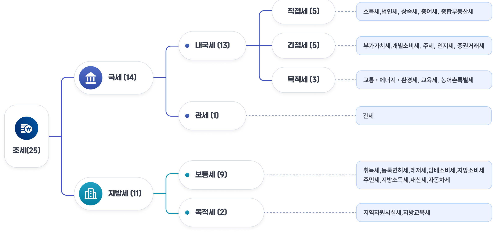

재정수지와 국가채무
1. 재정수입
재정수입은 중앙정부가 재정 활동을 수행하기 위해 확보하는 모든 재원을 뜻하며, 크게 1)국세수입, 2)세외수입, 3)기금수입으로 나눌 수 있습니다. 이 세 가지는 재원이 어떻게 조성되고 어떤 제도적 틀 속에서 운용되는지에 따라 성격과 역할이 구분됩니다.
국세수입은 국가가 법률에 근거하여 국민과 기업 등에 부과·징수하는 국세를 통해 확보하는 수입을 의미합니다. 국세는 크게 국내의 경제활동 등에 부과되는 내국세와 수입물품 등에 부과되는 관세로 구분되며, 소득세·법인세·부가가치세 등이 대표적인 국세입니다. 국세수입은 복지·교육·국방·SOC 등 다양한 국가정책을 수행하기 위한 정부의 핵심 재원으로 활용됩니다. 세외수입은 국세를 제외하고 정부가 확보하는 다양한 수입을 의미합니다. 국유재산의 임대료·매각대금과 같은 재산수입, 정부가 제공하는 서비스의 사용료·수수료, 각종 부담금, 융자금 회수 및 사업수입 등이 대표적인 세외수입입니다. 조세와 달리 정부의 재산운용, 서비스 제공, 특정 사업이나 부담 등에 따라 발생하는 수입이라는 특징이 있습니다. 기금수입은 정부가 특정한 정책목적을 수행하기 위해 설치한 기금에서 확보하는 수입을 의미합니다. 국민연금·고용보험 등 사회보험성 기금의 보험료 수입을 비롯하여 기금의 재산수입, 사업수입, 이전수입 및 자금운용수익 등이 재원으로 구성됩니다. 기금수입은 각 기금의 설치 목적에 따라 조성·운용되며, 관련 정책을 지속적이고 안정적으로 추진하기 위한 재원으로 활용됩니다.
우리나라의 조세 체계

2026년도 예산 및 기금운용계획 집행지침, 기획예산처
| 구분(수입관) | 예산과목(수입항) |
|---|---|
| 기업특별회계 영업수입(10) | · 양곡사업수입(41), 우정사업수입(43), 조달사업수입(45), 책임운영기관사업수입(49) |
| 재산수입(11) | · 관유물대여료(51), 정부출자수입(52), 전대차관이자수입(53), 기타이자수입 및 재산수입(54) |
| 경상이전수입(12) | · 연금수입(55), 벌금, 몰수금 및 과태료(56), 변상금 및 위약금(57), 가산금(58), 기타경상이전수입(59) |
| 재화 및 용역판매수입(13) | · 병원수입(62), 교도소수입(63), 입장료수입(64), 면허료 및 수수료(65), 입학금 및 수업료(66), 항공, 항만 및 용수수입(67), 실습수입(68), 잡수입(69) |
| 수입대체경비수입(14) | · 「국가재정법」 제53조제1항에 따른 경비로 지출되는 수입 |
| 관유물매각대(15) | · 고정자산 매각대(71), 토지 및 무형자산 매각대(72), 재고자산 및 유동자산 매각대(73) |
| 융자 및 전대차관 원금회수(20) | · 융자원금 회수(75), 전대차관 원금회수(77), 정부출자주식매각대(78) |
| 차입금 및 여유자금 회수(31) | · 민간차입금(82), 유가증권 매각대(84) |
| 차관수입(32) | · 차관수입(86) |
| 전년도 이월금(33) | · 전년도 이월금(88) |
| 세계잉여금(34) | · 세계잉여금이입액(89) |
| 정부내부수입 및 기타(40) | · 전입금(91), 예탁원금회수(92), 예수금(94), 예탁이자수입(95) |
2. 재정지출
재정지출은 정부가 조성한 재원을 바탕으로 공공서비스를 제공하고 정책목적을 실현하기 위해 사용하는 지출을 말합니다.
단순한 돈의 사용이 아니라, 정부가 어떤 기능을 우선시하고, 어떤 정책을 통해 사회적 가치를 실현하는지를 보여주는 핵심 수단입니다. 따라서 재정지출의 구조를 이해하는 것은 국가의 정책방향, 복지수준, 투자전략, 그리고 재정의 지속가능성을 파악하는 데 중요합니다. 재정지출은 1)소관별, 2)기능·목적별 그리고 3) 지출의무 여부에 따라서 구분합니다.
- 소관별 구분은 어느 중앙관서나 기관이 예산을 편성·집행하는지에 따라 나누는 방식으로, 예컨대 기획예산처, 교육부, 국방부처럼 집행 주체를 기준으로 재정지출을 파악하는 방법입니다. 이 방식은 정부 내부의 책임소재와 예산 배분 구조를 확인하는 데 유용합니다.
- 기능·목적별 구분은 재정이 무엇을 위해 쓰였는지에 따라 나누는 방식입니다. 우리나라에서는 일반적으로 12대 분야 또는 16대 분야로 구분하며, 12대 기준은 교육, 국방, 복지, SOC, 연구개발처럼 큰 정책영역을 중심으로 재정을 살펴보는 방식입니다. 16대 기준은 여기에 일반·지방행정, 공공질서 및 안전, 통일·외교, 예비비 등 세부 분야를 더해 보다 정교하게 재정의 용도와 정책 우선순위를 보여줍니다.
- 지출 의무의 여부는 법령 등에 국가의 지출의무가 명시되었는가를 기준으로 합니다. 우리나라는 의무지출을 재정지출 중 법률에 따라 지출의무가 발생하고 법령에 따라 지출규모가 결정되는 법정지출 및 이자지출로 규정하고 있습니다. 의무지출과 상대되는 개념인 재량지출은 법률상 지출의무가 없는 지출로서, 국가 재정지출에서 의무지출을 제외한 지출로 규정됩니다. 의무지출과 재량지출은 지출근거, 발생요인 등에서 차이점을 가지고 있습니다.
지출 분야별 분류체계 비교
| 구분 | 12대 분야 | 16대 분야 | |
|---|---|---|---|
| 도입 배경 | 예산분류에 대한 국민의 이해 증진 | 프로그램 예산제도 도입에 따른 예산체계 개편(장·관·항 → 분야·부문·프로그램) | |
| 도입 시점 | 2006년도 예산 | 2007년도 예산 | |
| 주요 특징 | 장점 | 국제기준을 참고하여 만든 체계로서 국가 간 비교 용이 | 실제 예산편성체계(프로그램 예산제도)와 일치하여 산출작업 용이 |
| 합계 | 분야별 지출액 합계가 총지출과 불일치 | 분야별 지출액합계가 총지출과 일치 | |
| 분야별 차이점 | 통신 | 항목 없음 (기업특별회계와 관련되어 재정투자와 차이있음) | 있음 |
| 예비비 | 항목 없음 | 있음 | |
| R&D | 있음 (전 분야에 포함된 R&D를 재집계) | 없음 (R&D사업이 각 분야에 포함됨) | |
| 국방 | 국방부, 방사청 일반회계 기준 (국방력과 직접 관련된 사항) | 국방부, 병무청, 방사청 포함 | |
| 12대 분야 | 16대 분야 | ||
|---|---|---|---|
| 연번 | 분야 | 연번 | 분야 |
| 1 | 보건·복지·고용 | 1 | 사회복지 |
| 2 | 보건 | ||
| 2 | 교육 | 3 | 교육 |
| 3 | 문화·체육·관광 | 4 | 문화및관광 |
| 4 | R&D(별도통계)1) | 5 | 과학기술 |
| 5 | 산업·중소기업·에너지 | 6 | 산업·중소기업및에너지 |
| 6 | SOC | 7 | 교통및물류 |
| 8 | 국토및지역개발 | ||
| 7 | 농림·수산·식품 | 9 | 농림수산 |
| 8 | 환경 | 10 | 환경 |
| 9 | 국방(일반회계 총계)2) | 11 | 국방 |
| 10 | 외교·통일 | 12 | 통일·외교 |
| 11 | 공공질서·안전 | 13 | 공공질서및안전 |
| 12 | 일반·지방행정 | 14 | 일반·지방행정 |
| 해당 없음 | 해당 없음 | 15 | 통신 |
| 해당 없음 | 해당 없음 | 16 | 예비비 |